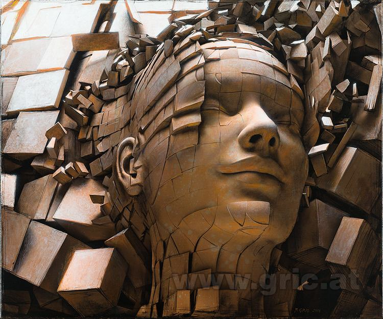
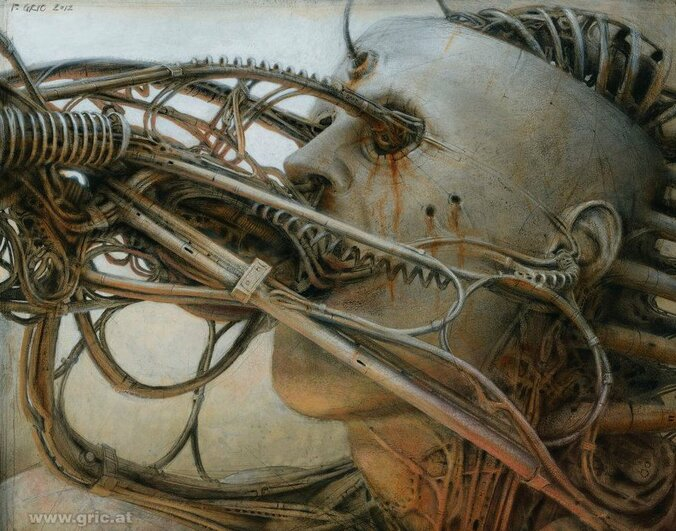
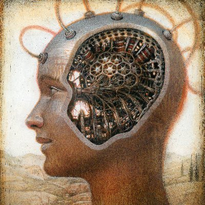
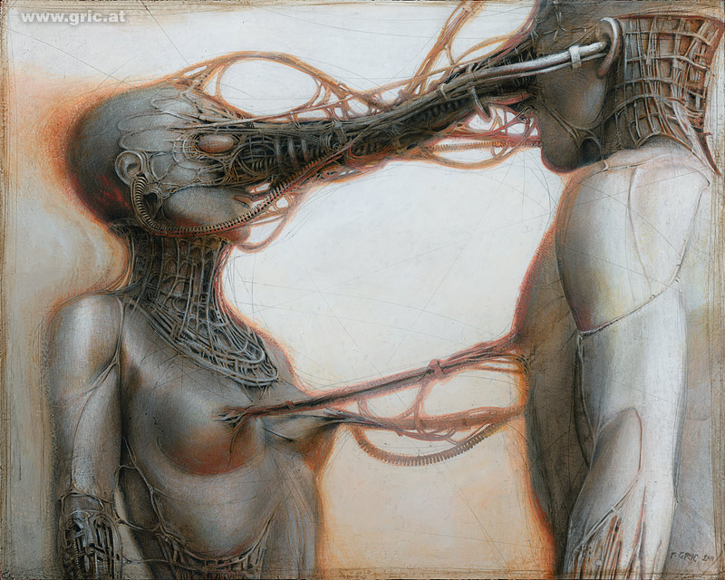

Peter Gric y su subrealismo fantastico
Peter Gric, or Petr Gric, (born 1968) is an Austrian painter, drawer, and illustrator originally from the Czech Republic.
Motives of futuristic landscapes and architecture, biomechanical surrealism, and fantastic realism can be found in his work.
Petr Gric was born in 1968 in Brno, former Czechoslovakia. His parents supported his talent in painting and drawing, which he exhibited when he was young.
In 1980 his parents, under the pretense described as vacation travel, emigrated through Hungary and Yugoslavia to Austria, and Gric thenceforth lived in Western Europe.
They spent one year in the countryside of Reichenau an der Rax. They soon moved to Linz where Gric finished primary school and studied graphic design at the Höhere Technische Lehranstalt.
A continuacion algunas de sus obras
| Dissolution of Ego V | Android IV | Unknown | Synchronization |
|---|---|---|---|
|  |  |  |  |